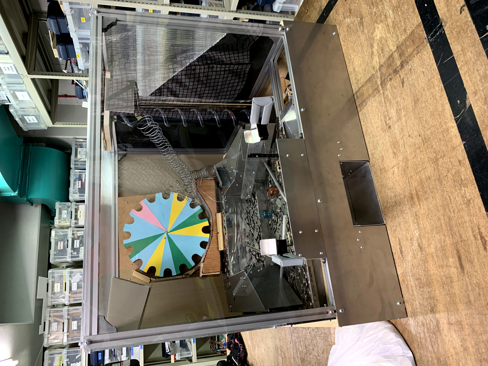
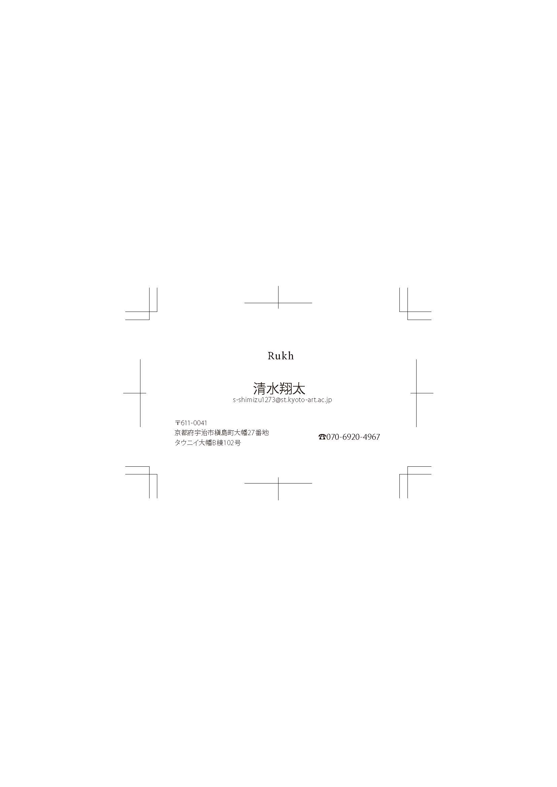
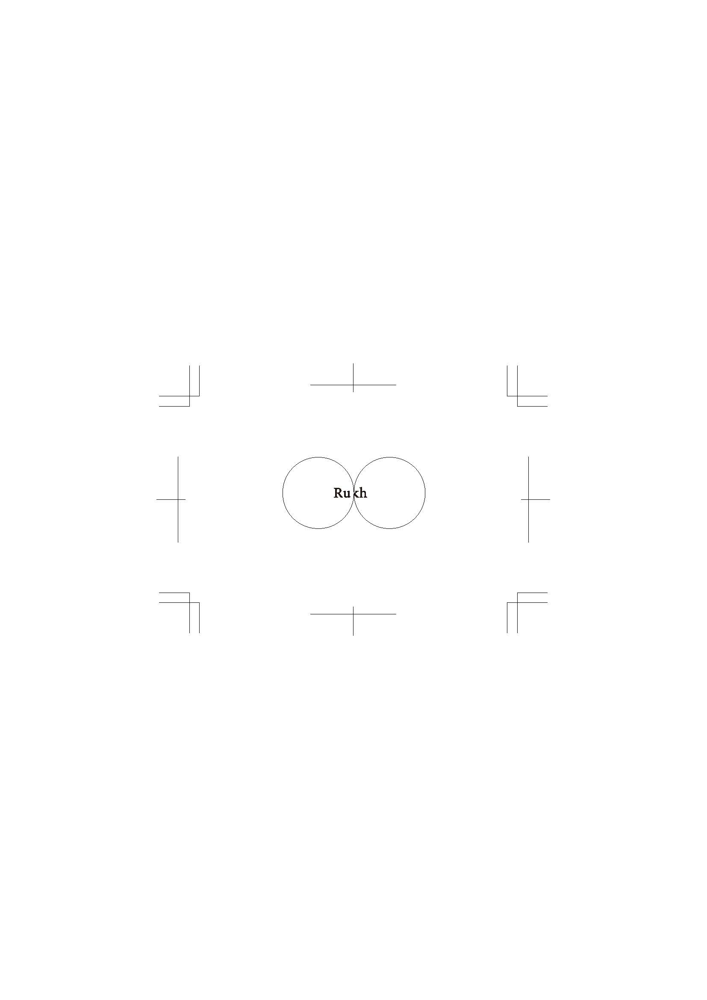
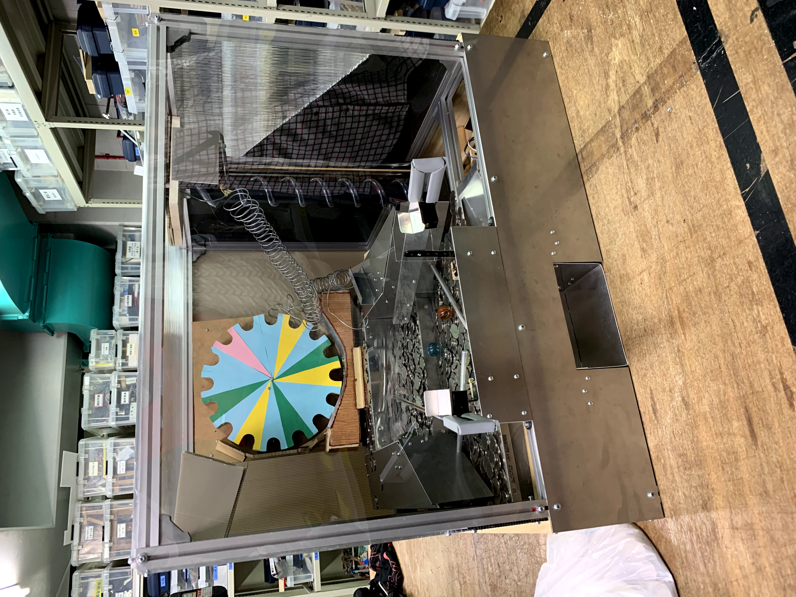
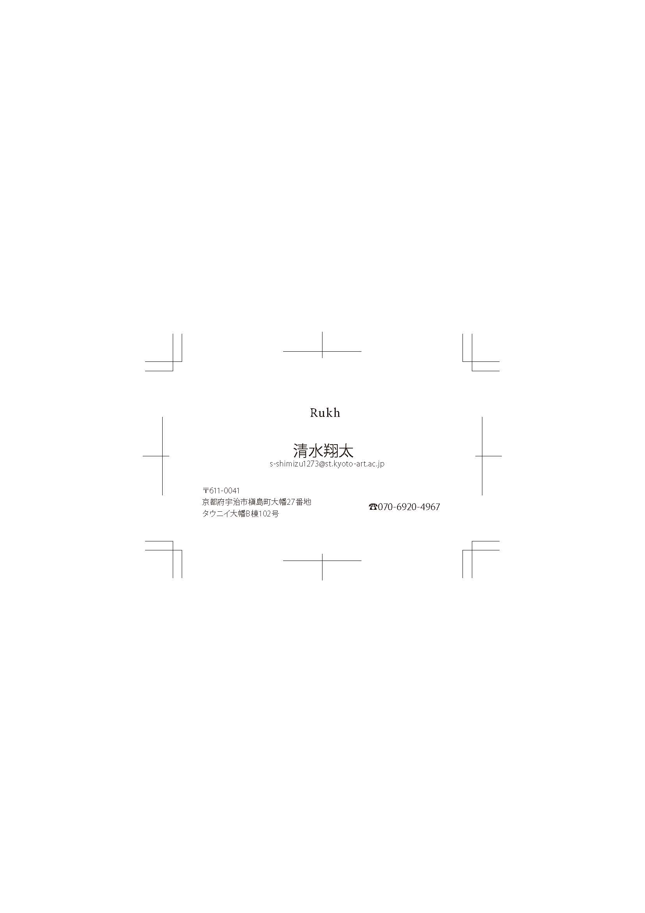
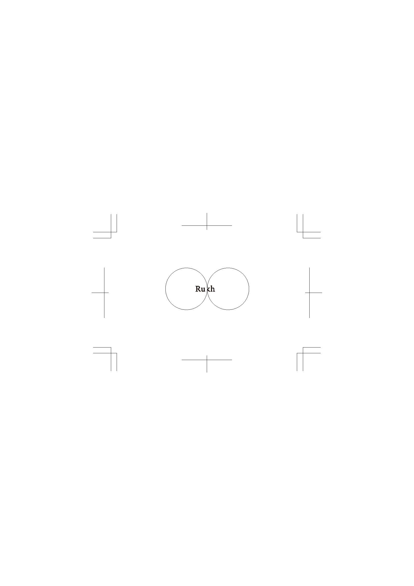

自己紹介
清水翔太、20歳です。
私は，高校卒業後専門学校へ進学し大学編入をし、京都芸術大学へ入学しました。
高校は普通科でものづくりに興味があったので機械系の専門学校へ進学しました。
しかし、企画やもう少し違ったものづくりをしたいと思い大学編入しました。
専門学校の卒業制作
卒業制作でメダルゲームを作りました。
課題
簡単なページを作ってみました。
練習名刺
 清水翔太、20歳です。
私は，高校卒業後専門学校へ進学し大学編入をし、京都芸術大学へ入学しました。
高校は普通科でものづくりに興味があったので機械系の専門学校へ進学しました。
しかし、企画やもう少し違ったものづくりをしたいと思い大学編入しました。
卒業制作でメダルゲームを作りました。
簡単なページを作ってみました。
練習名刺
 